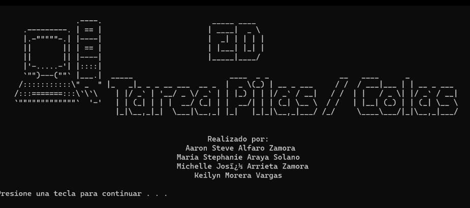
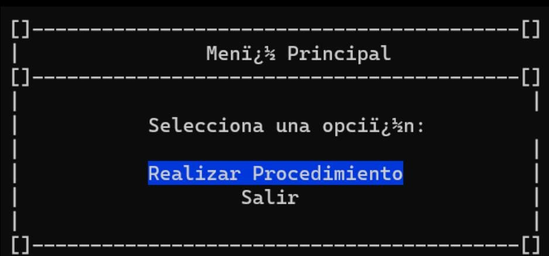
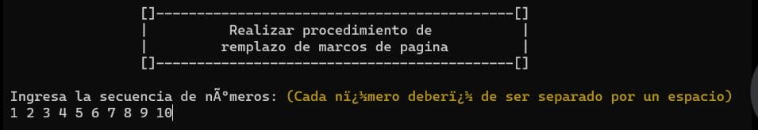
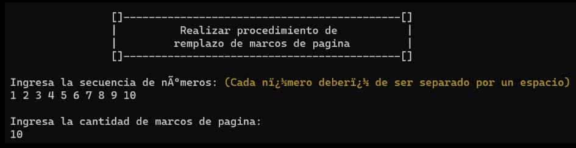
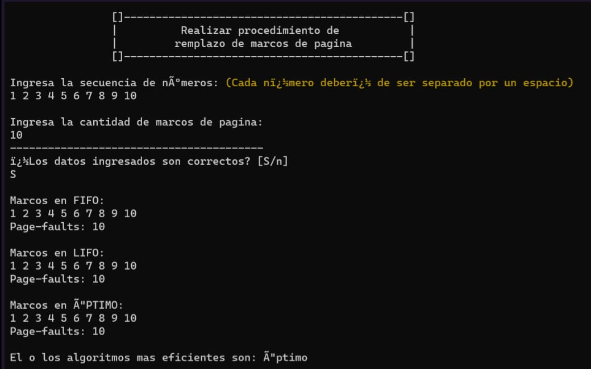

Portada
Menú Principal
Realizar Procedimiento
Salir
Realizar Procedimiento
Ingresa la secuencia de números
Ingresa la cantidad de marcos de página
¿Los datos ingresados son correctos?
Al iniciar el programa, se presentará al usuario una interfaz con una portada que contendrá el nombre del
proyecto: "ED Tarea Pilas/Colas" y los nombres de los participantes involucrados.

Al finalizar la portada, se mostrará la siguiente instrucción: "Presione una tecla para continuar...", que guiará al usuario hacia el siguiente menú del programa, permitiéndole proceder y explorar sus funcionalidades.
Al acceder al menú principal, los usuarios encontrarán dos opciones disponibles: "Realizar Procedimiento" y
"Salir". La opción que elija estará subrayada con color azul. Al presionar la tecla "Enter" sobre esta opción,
serán guiados hacia una nueva pantalla que les permitirá llevar a cabo los procedimientos relacionados con los
algoritmos de reemplazo de marcos de página (FIFO, LIFO, Optimo). En caso de que no deseen proceder con esta
opción, podrán seleccionar la segunda alternativa para salir del programa de manera segura.

Al seleccionar la opción "Realizar Procedimiento", el usuario será redirigido a otra pantalla donde se le
presentará la siguiente instrucción: "Ingresa la secuencia de números: (Cada número deberá ser separado por un
espacio)" En esta instrucción,
se solicita al usuario que ingrese una secuencia de números de su elección, donde cada número debe estar
separado por un espacio. Para llevar a cabo este análisis, se necesita una secuencia de números que representará
las páginas. Cada número en esta secuencia representará una página.
Es importante seguir rigurosamente el enunciado y asegurarse de que únicamente se ingresen números. Si se llega
a introducir una letra o símbolo, el programa mostrará un mensaje de error y solicitará nuevamente ingresar la
secuencia de números de acuerdo con las indicaciones. Una vez que el usuario proporciona una secuencia válida de
números, el programa procederá con la siguiente instrucción o paso correspondiente.

Al ingresar la secuencia de números para llevar a cabo este análisis, se mostrará otra
instrucción que solicitará al usuario ingresar el número de marcos de página. Es importante proporcionar la
cantidad de marcos de página deseada, ya que esto afectará directamente el rendimiento y la eficiencia de los
algoritmos de reemplazo de marcos de página que serán evaluados. Una vez ingresado el número de marcos de
página, el programa procederá a construir las secuencias de reemplazo de páginas para cada algoritmo de
reemplazo mencionado (FIFO, LIFO, Optimo) y evaluará el número de page-faults ejecutados por cada uno.

Al ingresar el número de marcos de página, aparecerá otra instrucción que preguntará al usuario lo siguiente: "¿Los datos ingresados son correctos? [S/n]" Esta instrucción tiene el propósito de permitir al usuario verificar si ha proporcionado la secuencia de números y el número de marcos de página correctos antes de proceder con el análisis de los algoritmos de reemplazo de marcos de página. Si el usuario está seguro de que los datos ingresados son correctos, podrá responder con "S" o "s" (representando "Sí") y el programa procederá a realizar el análisis y comparación de los algoritmos. En caso de que el usuario identifique algún error o desee realizar cambios en los datos ingresados, podrá responder con "N" o "n" (representando "No"). Luego de recibir esta respuesta, el programa volverá a solicitar la secuencia de números y/o el número de marcos de página
Después de que el usuario confirma que los datos ingresados son correctos, el programa procederá a realizar el análisis de los algoritmos de reemplazo de marcos de página (FIFO, LIFO, Optimo) utilizando la secuencia de números y la cantidad de marcos de página proporcionados. Una vez finalizado el análisis, el programa presentará los resultados obtenidos en cuanto al número de page-faults (fallos de página) ejecutados por cada algoritmo. Además, se mostrará una comparativa de la eficiencia de los algoritmos, resaltando cuál de ellos logró realizar la menor cantidad de page-faults y cuál se asemejó más al algoritmo óptimo en términos de minimizar los fallos de página.
En resumen, después de confirmar la corrección de los datos, el programa mostrará los resultados del análisis, permitiendo al usuario evaluar la eficiencia de los algoritmos y tomar decisiones informadas sobre la mejor opción para la gestión de memoria en el contexto específico del problema.
El objetivo de las pruebas es validar la correcta funcionalidad de la implementación del programa de análisis de algoritmos de reemplazo de marcos de página. Se busca asegurar que el programa acepte adecuadamente la secuencia de números y el número de marcos de página, que construya las secuencias de reemplazo para cada algoritmo y que muestre los resultados correctos de page-faults y el algoritmo más eficiente según la cantidad de page-faults. Prueba de ingreso de datos: Caso de prueba 1: Verificar que el programa acepte correctamente la secuencia de números separados por espacios. Caso de prueba 2: Comprobar que el programa acepte y procese correctamente el número de marcos de página requerido. Resultado: Se acepta y procesa correctamente la secuencia de números separados por espacios y de marcos de página requerido. Pruebas de generación de secuencias de reemplazo: Caso de prueba 3: Evaluar que el programa construya las secuencias de reemplazo de página para cada algoritmo (FIFO, LIFO, Óptimo) de manera coherente con la secuencia de números proporcionada. Resultado: Se construyen secuencias de manera coherente y correctas. Pruebas de cálculo de page-faults: Caso de prueba 4: Verificar que el programa calcule correctamente el número de page-faults para cada algoritmo. Caso de prueba 5: Comprobar que el programa muestre los resultados numéricos de page-faults de forma precisa. Resultado: El programa calcula correctamente y muestra los resultados de page-faults para cada algoritmo. Pruebas de selección del algoritmo óptimo: Caso de prueba 6: Evaluar que el programa identifique correctamente el algoritmo con la menor cantidad de page-faults como el más eficiente. Caso de prueba 7: Comprobar que el programa muestre claramente el nombre del algoritmo óptimo identificado. Resultado: El programa identifica y muestra el algoritmo más eficiente. Pruebas de validación de datos: Caso de prueba 8: Verificar que el programa detecte y maneje adecuadamente situaciones de ingreso de datos no válidos, como letras o caracteres especiales en lugar de números. Resultado: El programa está validado correctamente.
En este proyecto de desarrollo e implementación, hemos logrado construir una solución efectiva para analizar y comparar diferentes algoritmos de reemplazo de marcos de página (FIFO, LIFO, Optimo). Nuestro objetivo era evaluar su eficiencia en la gestión de memoria y determinar cuál de ellos realizaría la menor cantidad de page-faults. En cuanto a mejoras, consideramos que podríamos ampliar nuestro análisis incluyendo otros factores que pueden influir en el rendimiento de los algoritmos, como la frecuencia de acceso a las páginas o el tamaño de las secuencias. Esto nos permitiría obtener resultados aún más precisos y adaptados a escenarios más diversos. En resumen, nos sentimos satisfechos con los resultados obtenidos en este proyecto y creemos que hemos alcanzado nuestro objetivo de analizar y comparar los algoritmos de reemplazo de marcos de página.